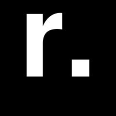
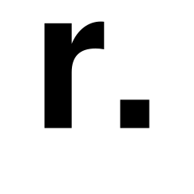
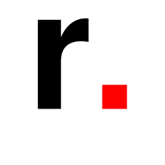
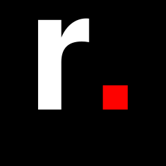

Regular · black on white ★ recommendedW1
Outlined Helvetica paths (no font dependency). Regular weight reads more gallery/editorial; bold is the louder option.
From your favicon. For avatars, stamps, watermark, document corners. Sharp square container.




The mark must hold at 16px. Square versions carry small sizes best.
Rebeca Elmúdesi (Dominican Republic, 2003) is a visual artist based in Madrid whose pictorial practice explores the mechanisms of perception, the construction of identity, and the tensions that arise between one's own gaze and the gaze of others.